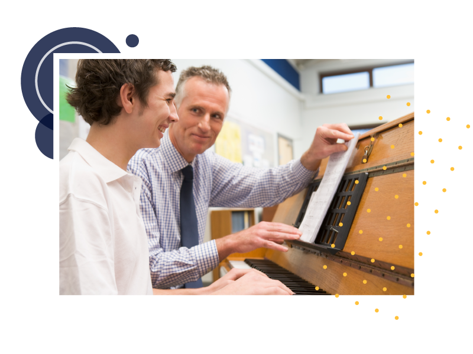

O papel do professor-mediador é semelhante ao de um maestro, ou maestrina, regente de uma orquestra.
De certa forma, mediação é gestão.
Mediação também envolve planejar, organizar e coordenar atividades e pessoas. Enquanto a gestão do projeto cuida de aspectos macro da intervenção, zelando para que as ações aconteçam, a mediação enfoca o âmbito da micro gestão educacional, detendo-se à dimensão didático-pedagógica das ações e à promoção da aprendizagem pretendida através dessas ações.

Figura 02 - Fonte: Imagem produzida pela equipe gráfica do projeto.
O psicólogo Lev Vigotski apontou que toda aprendizagem é mediada, seja por ferramentas, técnicas, conceitos ou outros instrumentos da cultura, começando pela própria linguagem. Ele destacou a importância das relações histórico-sociais na mediação.
Vigotski (1926/2003) teorizou que o desenvolvimento humano se dá em, pelo menos, dois níveis: o desenvolvimento real do sujeito, a partir de funções psicológicas já construídas; e o desenvolvimento potencial, com funções psicológicas incompletas. O espaço entre o desenvolvimento real e o potencial é o que Vigotski chamou de Zona de Desenvolvimento Proximal (ZDP), que o sujeito pode vir a alcançar por meio de relações estabelecidas com outras pessoas, como colegas e professores, e com o ambiente.
Zona de Desenvolvimento Proximal (ZDP)
Figura 02 - Fonte: Imagem produzida pela equipe gráfica do projeto
Portanto, a mediação é peça-chave no desenvolvimento humano.
Alguns autores utilizam a expressão "pilotar", no sentido de que o/a docente pilota uma turma, guiando a aprendizagem. Isso acontece em nível "micro", por meio de gestos profissionais, alguns rotineiros, formas de comunicação, posturas, etc. Em nível "meso", também, com ações de gestão da sala de aula, organização da atividade dos estudantes, improvisos, reorganização... E também em nível "macro", com o desenvolvimento de concepções e valores (PASTRÉ, 2007). Nem sempre estas ações, gestos ou valores são explícitos ou conscientes para estudantes e para docentes. Estes níveis se interligam pois um gesto pode representar a incorporação ou demonstração de um valor. O mesmo acontece nos processos de mentoria e orientação para a carreira.
Realização:
Secretaria de Educação Profissional e Tecnológica
Produção: